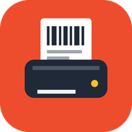

Label Printer
Android app for e-commerce sellers
What it does
Label Printer reads Shopee shipping label PDFs (for example Anteraja and SPX) and prints them on a 58mm Bluetooth thermal printer. Each label shows the courier name, the tracking number (resi) as a QR code and a Code128 barcode that scans reliably on low-resolution thermal paper, and the full address.
Features
- Open label PDFs of different sizes and print them in one tap.
- Print history with printed / not printed marks, and reprint at any time.
- Scan labels with the camera to look up product details, with the camera staying open for fast repeated scans.
- Optional Google Drive backup and sync of renamed PDFs and the print log across devices.
Requirements
Android 7.0 or newer and a Bluetooth ESC/POS thermal printer (58mm paper).
Support
Created by David Sutadi. For help, contact us on WhatsApp: +62 811-977-710.